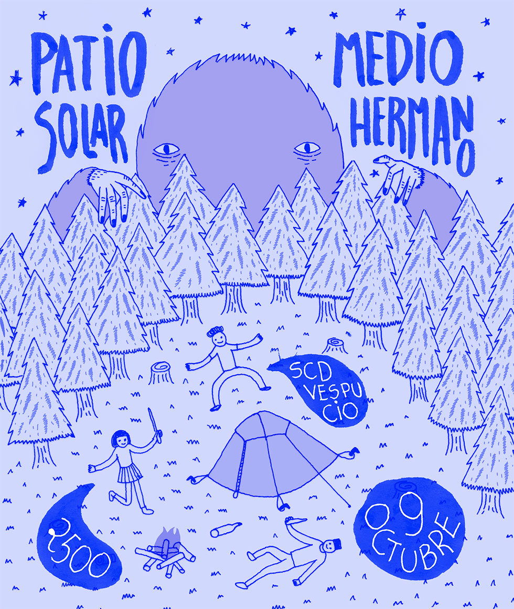

Patio Solar y Medio Hermano se presentan en la sala SCD Vespucio
Este viernes 9 de octubre a las 20:00 horas, la sala SCD de Vespucio recibirá a las bandas Patio Solar y Medio Hermano, en una presentación conjunta de los representantes de Piloto y Sudamerican Records.
Patio Solar, conjunto encabezado por Claudio Gajardo, Yaney Salgado, Camilo Jiménez, Franco Perucca y Javier Poduje, son una de las bandas revelación del indie chileno de este 2015, con su aclamado disco "Temporada", lanzado en enero bajo el alero de Piloto.
Medio Hermano, tripleta formada el año 2014 por ex miembros de la mítica banda La Reina Morsa, se encuentra promocionando su primer EP homónimo (Sudamerican Records, 2014). El conjunto liderado por JF Rubilar, Leo Saavedra y Ricardo Herrera ha tenido gran atención en la prensa especializada.
La adhesión tendrá un precio de $2500 y las entradas pueden comprarse desde ya tanto en las boleterías de la sala SCD de Vespucio como Bellavista y en ticketek.cl. Además, durante el evento estarán disponibles para la venta las primeras copias físicas del álbum "Temporada" de Patio Solar (Piloto, 2015) y del EP de Medio Hermano.
Puedes escuchar "Temporada" de Patio Solar aquí https://patiosolar.bandcamp.com/ y el EP homónimo de Medio Hermano en este link https://mediohermano.bandcamp.com/.
PATIO SOLAR Y MEDIO HERMANO EN SCD VESPUCIO
9 DE OCTUBRE, 20:00
CENTRO MALL PLAZA VESPUCIO
Vicuña Mackenna 7110, Santiago, La Florida, Región Metropolitana, Chile
$2500 (General y apto para todo público)
ADJUNTO:
FOTO GRANDE AFICHE
PILOTO: Sitio Web Facebook Twitter Instagram Soundcloud Youtube
✈ comunicaciones@piloto.club ✈ contacto@piloto.club ✈